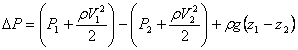
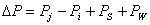

Infiltration is the result of air flowing through openings, large and small, intentional and accidental, in the building envelope. Simulation programs require a mathematical model of the flow characteristics of the openings. For a general introduction see Chapter 27 of [ASHRAE 2005] and section 2.2 of [Feustel 1990].
Flow within each airflow element is assumed to be governed by Bernoulli's equation:
|
 |
(16) |
where
DP= total pressure drop between points 1 and 2
P1, P2= entry and exit static pressures
V1, V2= entry and exit velocities
r= air density
g= acceleration of gravity (9.81 m/s2)
z1, z2= entry and exit elevations.
The following parameters apply to the zones: pressure, temperature (to compute density and viscosity), and elevation. The zone elevation values are used to determine stack effect pressures. When the zone represents a room, the airflow elements may connect with the room at other than its reference elevation. The hydrostatic equation is used to relate the pressure difference across a flow element to the elevations of the element ends and the zone elevations, assuming the air in the room is at constant temperature. Pressure terms can be rearranged and a possible wind pressure for building envelope openings added to give
|
 |
(17) |
where
Pi, Pj= total pressures at zones i and j
PS= pressure difference due to density and elevation differences, and
PW= pressure difference due to wind.
Equation (17) establishes a sign convention for direction of flow: positive is from zone j to zone i. Since the airflow elements will be described by a relationship of the form w = f(DP), the partial derivatives needed for [J] in equation (9) are related by �w/�Pj = -�w/�Pi which establishes the relation in equation (10). Many forms of airflow elements are available in CONTAM.